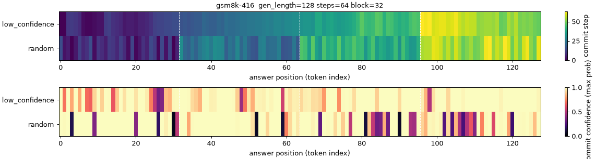

Most language models write one word at a time, left to right. A diffusion language model does something different: it starts from a fully blanked-out answer and fills in the blanks over a number of steps, a few words at a time, in whatever order it likes. That one change raises questions I did not have good answers to. In what order does it actually write? How many steps does an answer need? And when it says it is sure, is it right?
This project is my attempt to find out by building and measuring rather than by reading. Everything runs on my MacBook (Apple Silicon, 24 GB of memory): no cloud GPUs, no cluster. That keeps the experiments small, and it keeps them honest, because every run has to fit in the hours and the memory I actually have. It is a learning exercise, not research, and it makes no claim to anything new.
Phase 1 looks at a real model, LLaDA, with 8 billion parameters, about the largest thing that fits on the laptop. Watching it fill in answers to school maths problems, it turns out to write almost left to right anyway: the words next to text it already knows are the easiest to guess, so they go first. It is also over-confident. On one task it said it was 87% sure and was right 42% of the time.
Phase 2 builds a tiny diffusion model from scratch, small enough to train in 13 minutes, that fills in 4×4 Sudoku grids. Then it is improved with reinforcement learning, which here means: let the model try, check whether the grid is valid, and nudge it towards the attempts that worked. The training rule (an objective called wd1, from a recent paper) is written by hand. A variant that the paper says should collapse did collapse, then recovered and won. That was not supposed to happen.
Phase 3 takes that result apart with a few hundred short training runs: why the variant collapses, what makes wd1 slow, whether the model can learn the order in which to fill the cells, and whether it can be taught to say how confident it is. Before each experiment the expected outcome is written down. About a third of those predictions turned out wrong, and the write-up says so.
